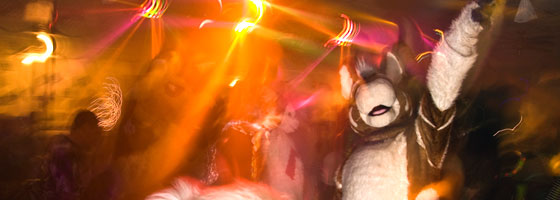

The Picnic
Held each year at Blanchard Park, the Furloween Picnic is a chance to relax and chill after the insanity of the night before. This event is potluck, so bring something to munch, something to cook, or something to drink. Also bring your favorite outdoor toys to enjoy! The picnic starts at noon and runs until park close. We'll be down by the dam, across from the playground, and right next to the YMCA. Just look for the column of fire from our BBQ and you should be right on track!
Activites
Activites TBD!
Directions
Here's a Google Maps link to Blanchard Park; use it to get your own directions to the spot! Note: this is the exact spot. Once you get there, find a place to park, and look down towards the water, that's where we'll be. Unless of course, someone already has both tables, in which case, we'll be around there.
